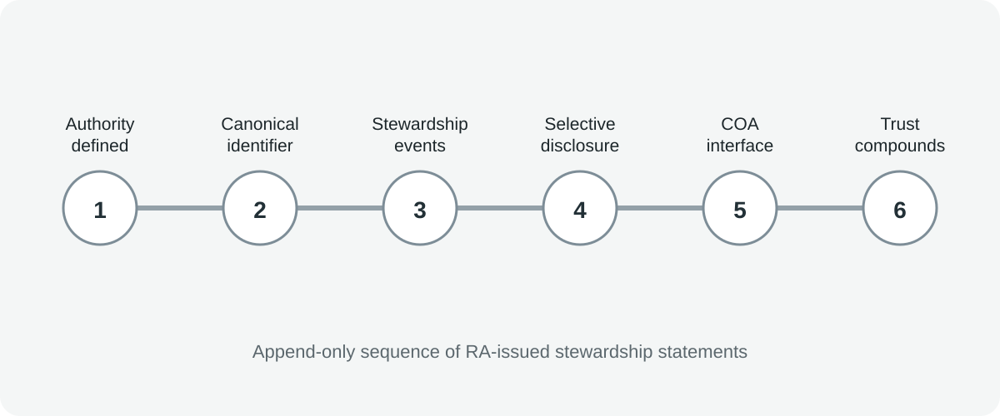

Museum loans
Reduce repeated provenance reconstruction for lending committees.
Integrity Substrate
RSA records provenance-relevant stewardship statements in a durable sequence so verification can compound instead of resetting at every institutional or market interface.

Without durable shared references, each institution, insurer, scholar, or buyer rebuilds trust from scratch. RSA turns repeated private verification into reusable infrastructure.
The thesis positions Zcash as a shielded public Layer 1 for two simultaneous requirements: tamper-evident ordering and selective disclosure. Verification can be scoped to a single artwork trail without exposing full inventories or sensitive counterpart information.
Registry Authority is publicly declared with governance, succession, and revocation procedures.
A canonical identifier anchors referential continuity across catalogue, institutions, and transactions.
Provenance-relevant statements accumulate as append-only, RA-issued entries.
Verification is scoped to a work-level trail without forcing total portfolio exposure.
Certificates of Authenticity act as an operational bridge into real institutional and market workflows.
Due diligence cost decreases over time because verification does not reset each cycle.
Reduce repeated provenance reconstruction for lending committees.
Improve risk analysis through traceable stewardship chronology.
Support collateral diligence with clearer attribution and documentation continuity.
Increase citation stability by preserving reference integrity across revisions.
Lower discounting due to uncertainty in authenticity and custodial continuity.